HOW TO USE THIS PROGRAM
A) Click on the calendar below "Enter date of birth". Once you enter your birth month, birth date, and birth year (optional), a corresponding Knicks player and their data will be displayed below. Data can be re-entered.
B) Click a player picture on the side panels. Their data will be displayed below.
To exit this window, click anywhere on the screen. To come back to this window, press the "Click for help" button again.
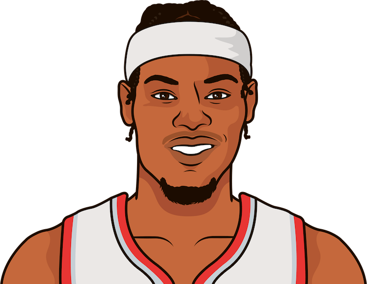-Went to Duke with RJ Barrett
-Played with Hawks and Knicks
-Moved to Portland at trade deadline
11.8 PTS
3.1 RB
2.2 AST', './zodiacTeamSounds/camReddishSound.mp3');">
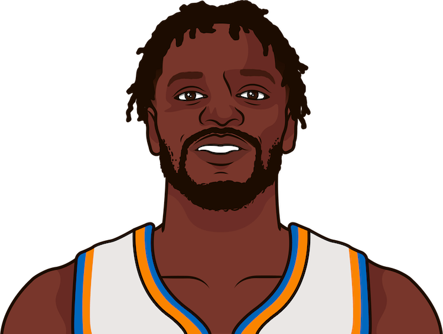-Went to Kentucky
-Played with Lakers and Pelicans
-2 time all-star and 1 time most improved player
25.2 PTS
10.3 RB
4.1 AST', './zodiacTeamSounds/juliusRandleSound.mp3');">
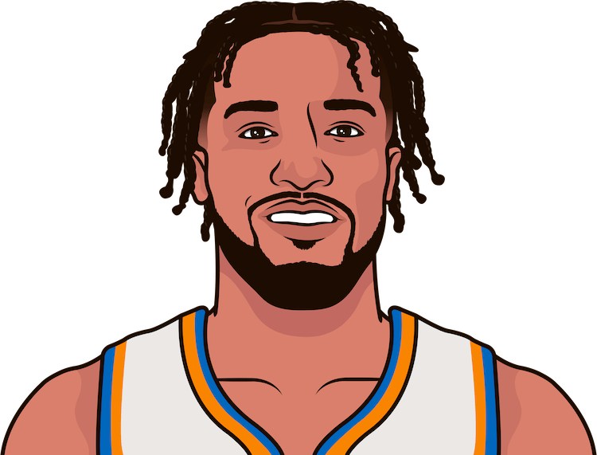-Went to Villanova with Josh Hart
-Played with Mavericks
-The best Knicks point guard in over a decade
23.8 PTS
3.6 RB
6.1 AST', './zodiacTeamSounds/jalenBrunsonSound.mp3');">
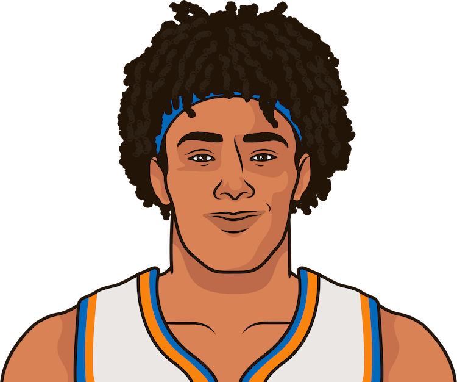-Went to Texas
-44.5 inch vertical
-Notoriously dissapointing dunk contest
3.5 PTS
4.7 RB
0.5 AST', './zodiacTeamSounds/jerichoSimsSound.mp3');">
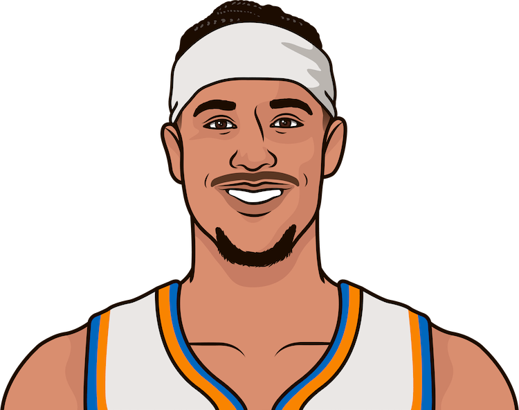-Went to Villanova with Jalen Brunson
-Got traded for Cam Reddish
-Hustles and does the little things
9.9 PTS
7.9 RB
3.9 AST', './zodiacTeamSounds/joshHartSound.mp3');">
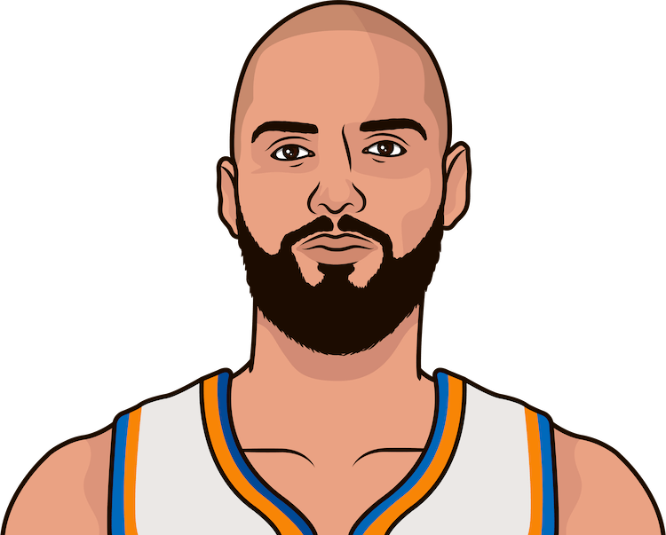-From France
-Played for Orlando and Boston
-Can shoot, sits on the bench
6.8 PTS
2.0 RB
1.5 AST', './zodiacTeamSounds/evanFournierSound.mp3');">
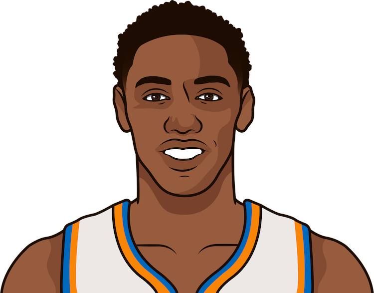-Went to Duke with Cam Reddish
-Drafted #3 overall by the Knicks in 2019
-Has potential, but needs to be more consistent
19.9 PTS
5.1 RB
2.7 AST', './zodiacTeamSounds/rjBarrettSound.mp3')">
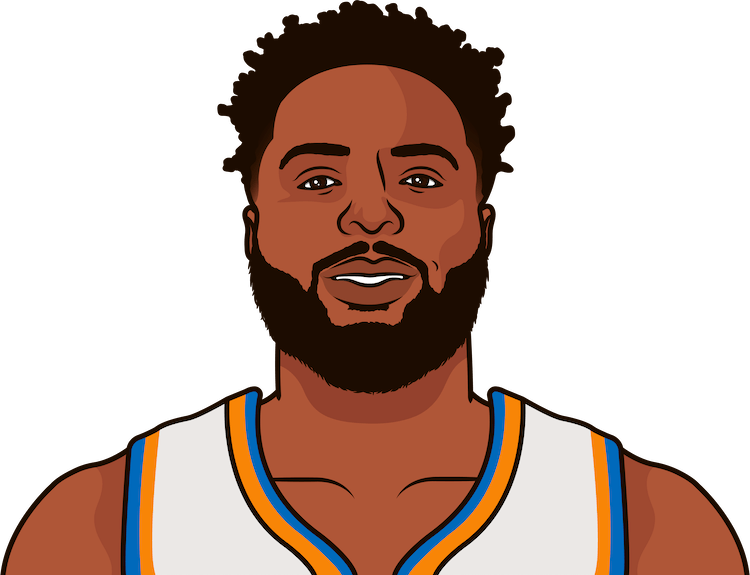-Went to Western Kentucky University, but dropped out
-Second round pick by the Knicks
-Underrated rim protector and finisher
7.5 PTS
9.1 RB
0.9 AST', './zodiacTeamSounds/mitchellRobinsonSound.mp3');">
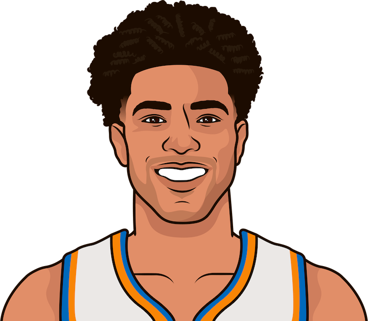-Went to Houston University
-2022 All-Summer League First Team
-Solid shooter and perimeter defender
9.8 PTS
3.1 RB
1.9 AST','./zodiacTeamSounds/quentinGrimesSound.mp3');">
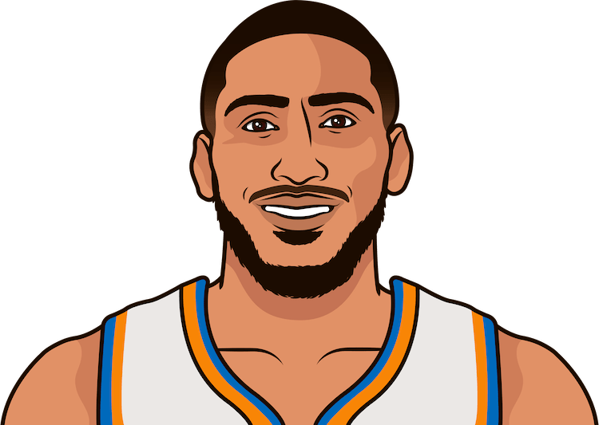-Went to Dayton University
-Dynamic dunker and corner shooter
-Has potential but does not get minutes
6.2 PTS
2.8 RB
0.8 AST','./zodiacTeamSounds/obiToppinSound.mp3');">
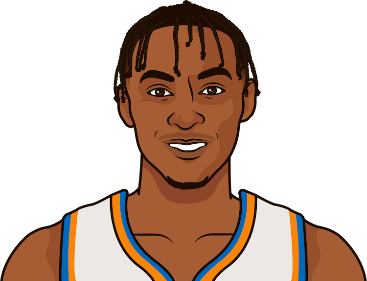-Went to Kentucky
-Craft shot creator and perimeter defender
-One of the best role players in the NBA
13.6 PTS
4.1 RB
3.2 AST','./zodiacTeamSounds/immanuelQuickleySound.mp3');">
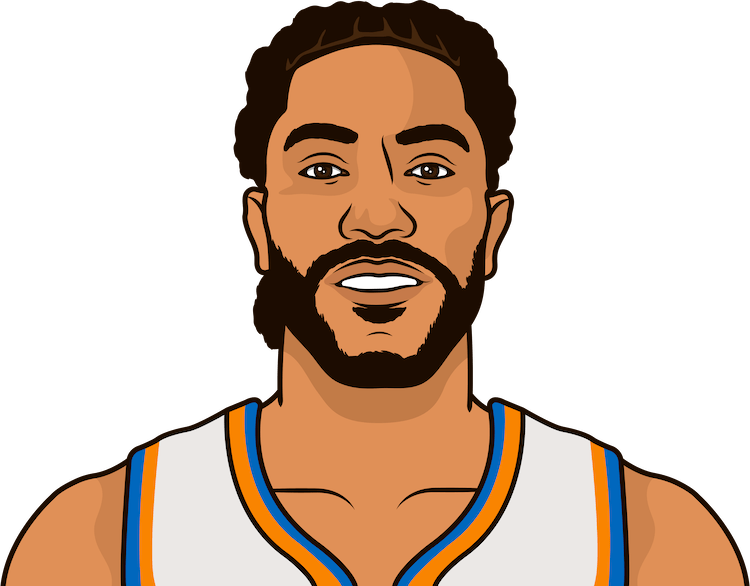-Went to Memphis
-2011 MVP, youngest in NBA history at 22 with the Bulls
-Injuries hurt his career, but now is a veteran presence on the bench
5.6 PTS
1.5 RB
1.7 AST','./zodiacTeamSounds/derrickRoseSound.mp3');">